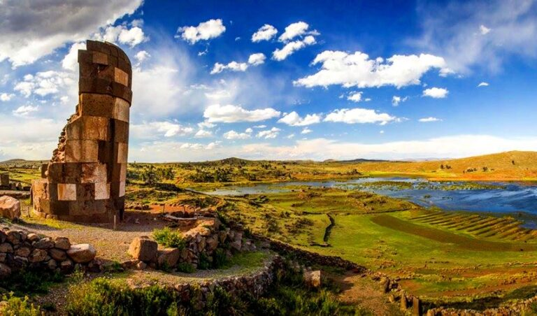

Lago Titicaca
El lago navegable más alto del mundo, rodeado por pueblos indígenas y paisajes de montaña.
Una plataforma para conocer el lago Titicaca, las islas flotantes, festividades ancestrales y platos típicos del altiplano.
Explora lugares reales como las islas flotantes de los Uros, Taquile, Amantaní y Sillustani.
El lago navegable más alto del mundo, rodeado por pueblos indígenas y paisajes de montaña.

Un paisaje único de totora y comunidades vivas en el corazón del lago Titicaca.

Las torres funerarias preincaicas junto al lago Umayo crean un mirador arqueológico impresionante.
Conoce las tradiciones que mantienen el altiplano, desde la diablada hasta el tejido andino.
La Virgen de la Candelaria reúne miles de danzantes y músicos en una celebración de fe y folklore.
La morenada, diablada y caporales evocan historias de la región y el encuentro entre culturas.
Los tejidos de lana y las prendas tradicionales muestran patrones y colores del altiplano.

Descubre las historias de los quechua y aymara en Puno.
Ver pueblosDescubre sabores del altiplano con recetas ancestrales e ingredientes autóctonos.

Una receta tradicional de Puno con sabor intenso y texturas fritas.

Del lago Titicaca a tu mesa, la trucha es un clásico fresco y jugoso.

Una bebida de maíz morado que se sirve caliente junto a un pastel de trigo.
Completa un itinerario personalizado con presupuesto estimado y recomendaciones de ruta.
Crear itinerario